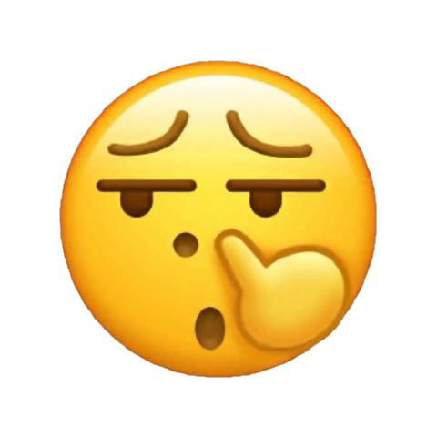
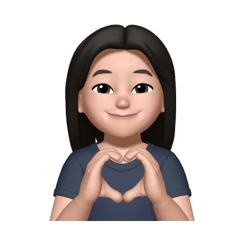
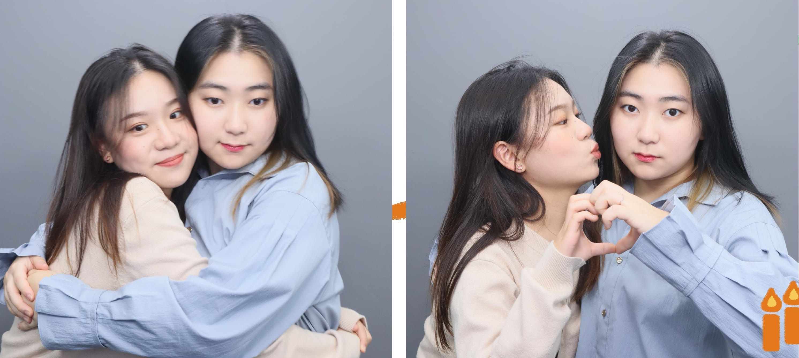

To. 내 분신 최팡
하이. 분신 코딱지에서 분신 코골이로 진화한 쵱니다ㅋㅋㅋ 이제는 왜 코딱지였는지도 잘 기억이 안 나네. 내가 코 파서 묻히는 장난을 했었나? 드럽구만ㅋㅋ 뻔하고도 당연한 말이지만 생일 축하한다!!! 언제나 그랬듯이 내가 세상에서 제일 축하할 것이다. 이름도 비슷한 너와 내가 80억 인구(방금 맞는 지 검색해 봄ㅎ)가 사는 지구에서 우리가 만났다는 게 참 기적같은 일이라고 생각혀~~,,, 너를 만나지 않았다면 모를까 너가 없는 내 삶이 이제는 상상이 안 간다. 고등학교 때부터 독일 얘기를 들어왔으니 사실 어느 정도는 내가 덤덤해졌을 수도 있겠다고 생각했거든? 서연 언니나 혜린 언니나 너랑 내 관계를 아는 사람들이 최이 독일가면 어떡하냐~ 이러면 장난 반 진심 반 몰러 개망했어 그냥ㅋㅋ 이러고 넘기기도 했고 ㅋ 지금 이 편지 쓰면서 생각한거지만… 아마 깊게 생각하는 순간~ 고딩 때 영통으로 독일 얘기하면서 둘이 같이 찔찔 울던 상황이 다시 발생할 걸 알아서 회피한 것 같음 ㅎ… 생각하기를 포기하다 ㅋㅋ 실제로 지금 쓰면서 잠깐 깊게 생각했더니 눈물이 핑 도는구만 (다시 생각하기를 그만두는 중) 매년 같이 보내는 마지막 생일일 거라고 생각하다가 이제 진짜가 다가오니까 마음이 싱숭생숭하다! 물론 떠나가는 네 마음이 제일 불안하고 힘들겠지(이것도 갑자기 생각하니까 눈물이 핑핑이네 ㅋㅋ 장수인 되겠음) 그리고 내가 최근에 정신이 없었으니까 너도 그런 것들을 더욱 얘기 못했을 수도 있었을 것 같어… (아닐 수도) 항상 내 기분, 컨디션 다 배려해주고 생각해주고 챙겨줘서 진심으로 고마워 너한테 인간으로서 배울 점이 많다고 생각하고 널 보면 나도 괜찮은 사람이 되고 싶다는 생각이 들어. 근데!!! 자꾸 너한테는 내 음침~한 속마음을 자꾸 털어놓게 됨… ㅠ.ㅠ 가끔 그런 나의 안좋은 모습을 보일 때면 나를 어떻게 생각할 지 걱정이 되면서도, 자꾸 내 코딱지 보여주면서 이래도 날 좋아할거냐 하는 애시키같은 꼬장을 부리게 되는 것 같어…

그러다가 또 너가 남친이랑 노느라 문자를 하루이틀 안읽씹하거나 모르고 읽씹하거나 하면 갑자기 악마삐순이가 깃들어서 무슨 짝꿍에게 삐친 남초딩 마냥 틱틱거리고 그러는 듯… 너 독일 가기 전까지는 최대한 의젓한 모습을 보여볼게…😇 그래도 남자친구가 있으니까 마음 나눌 데가 또 있다는 점은 매우 좋다고 생각혀ㅎ 에휴 이런 미친~~~ 너 가면 나 어떻게 사냐~~~~~ (이승기처럼 살 듯) 너가 지구 어디에 있든 얼마나 시간이 흐르든, 죽기 전에 떠올릴 나의 가장 소중한 친구 일 거야 나도 너한테 그런 사람이였으면 좋겠다 앞으로 살면서 너만큼 날 사랑해주는 친구를 만날 수 있을까? 난 잘 모르겠다 🥺 남은 시간동안 최대한 즐거운 시간들 많이 만들자… 겹치는 무리가 태반이라 애들이랑 다 인사하려면 나도 맨날 출석할 듯 ㅋㅋㅋ 너가 멀리 떠난다는 건 참 슬프지만 네 미래를 위해 가는 거니까… 너가 가서 적응도 잘 하고 진짜 잘 해내기를 기도하겠다!!!(Not to 1나님 그냥 셀프로 기도한다는 뜻 ㅎ) 너는 감각 있는 사람이니까 퇴사하고 준비할 포트폴리오도 진짜 잘할 수 있을 거여. 그래도 혜린 언니가 이 분야에 대해 잘 알아서 다행이라고 생각했음 ㅜㅜ 나는 4년 동안 뭘 배운 건지… 그래도 궁금한 거 물어보면 내가 아는 선에서는 최대한 알려주겠삼!!! 항상 손편지로 썼었는데 엊그제 혜린 언니 생일 편지를 쓰면서 글씨가 너무 보기 안 좋아 보여서 다른 방법을 도전해 봤다! 맘에 들었으면 조켓네. 이따 너 만날 때는 그냥 주소창 적은 메시지 카드만 띨롱 줄 거임. 선물 준비 안 한 채로 만나는 생일은 또 처음이네 ㅋㅋㅋ 이따 썬구리 잘 골라보잣. 아 맞다!!! 흰색 초록색 톤 꽃도 살짝 준비해 봤슈~(케이크 색깔 아니었지렁) 헤헤^^ 반응 궁금하다 생일 세상에서 제~~~일로 축하한다! 사랑혀

From. 네 분신 쵱니
